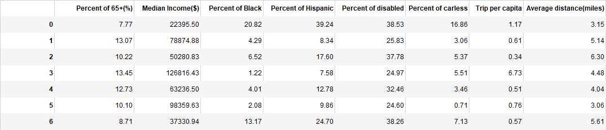

Cluster Analysis
What we can interpret from the result
We cluster the census tracts in Austin based on the socio-economic factors related to older adults and the trip patterns of RideAustin. We adopt the Silhouette Score Elbow to automatically determine the number of clusters. The figure shows the geographic distribution of three types of census tracts of a high concentration of older adults. Census tracts in Category 1 are mostly located in the outer suburbs. Census tracts in Category 3 are mostly located in the city center, while the census tracts in Category 4 are mostly low-income Latino communities. The figure further implies that ride hailing use is prevalent among communities with a high concentration of older adults. However, the ride hailing use benefits older adults living in the city center more. For those who live far from the city center and live in the poor neighborhoods, they travel for shorter distance or travel less frequently using RideAustin service though ride hailing provides an alternative mode for them in daily travel.
Attribute Table for Each Cluster Group
The table shows the mean character of the 7 categories of census tracts. In the analysis, we only focus on category 1, 3 and 4 as they have a higher share of older adults than the average level of Austin city. Category 1 has the relatively high share of Black people and the lowest rate of households without cars. In these census tracts, the trip per capita is the lowest, but the average distance of every trip is the longest. Category 3 has the highest median income, lowest level of disability and the highest percent of the households with cars. In these census tracts, the average trip per capita is the longest at nearly 7 and the distance is in the middle of all three groups. As for Category 4, these census tracts are characterized by low income, the highest share of the Hispanics. They have the lowest ride hailing trip per capita and the lowest average travel distance at close to 4 miles per trip.
